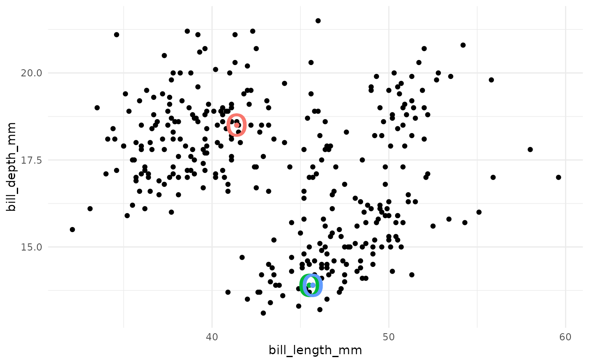
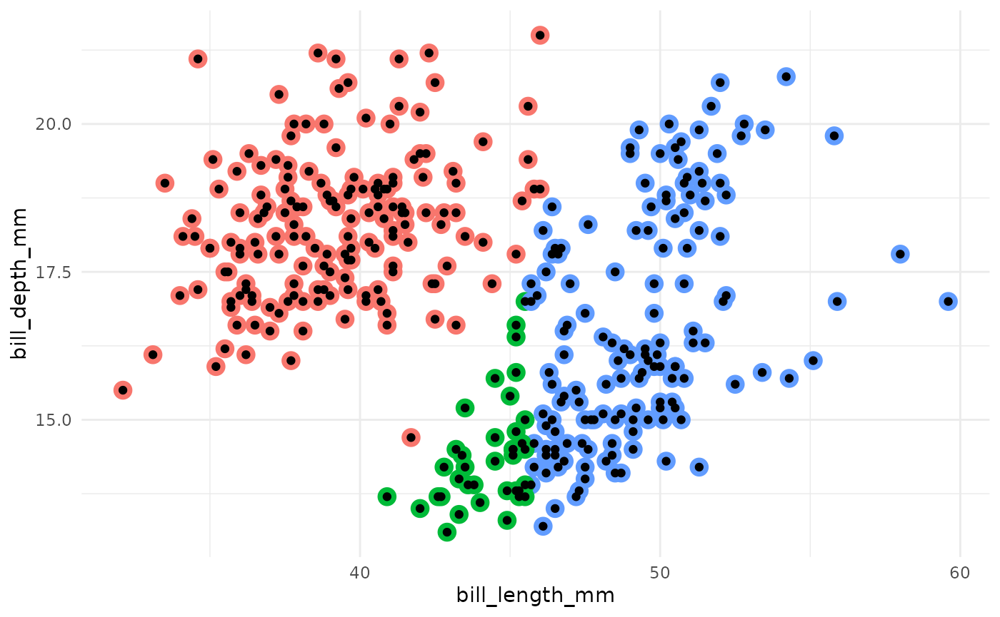
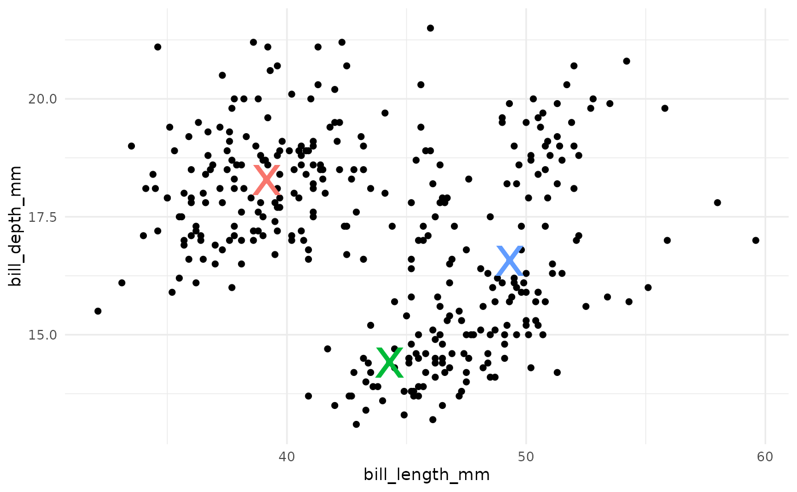
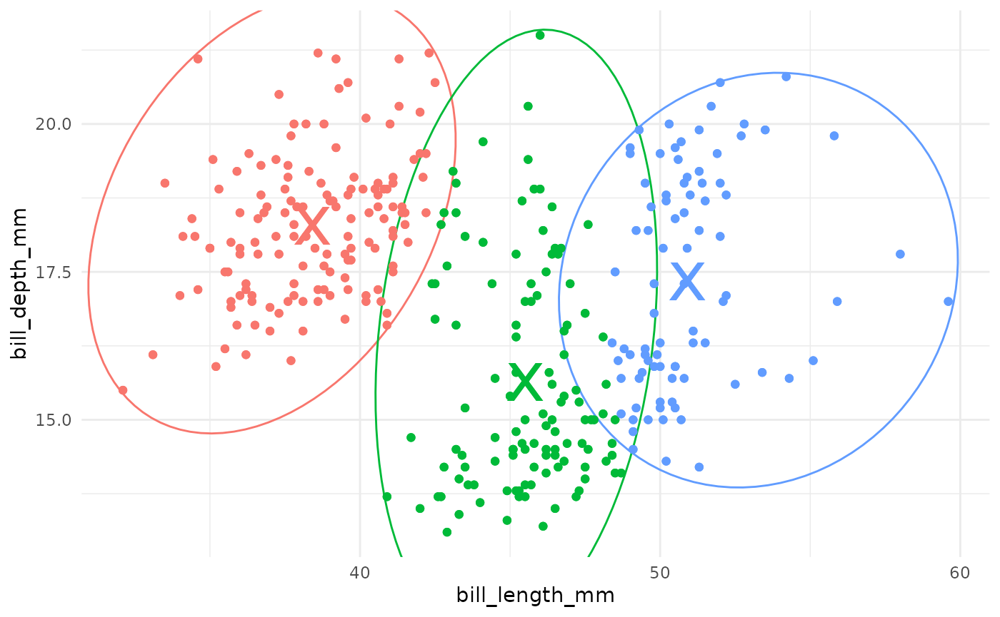

Setup
Load libraries:
Load and clean a dataset:
data("penguins", package = "modeldata")
penguins <- penguins %>%
select(bill_length_mm, bill_depth_mm) %>%
drop_na()
# shuffle rows
penguins <- penguins %>%
sample_n(nrow(penguins))At the end of this vignette, you will find a brief overview of the k-means algorithm, as well as some further algorithmic variant details, for those who would like a reference.
k-means specification in {tidyclust}
To specify a k-means model in tidyclust, simply choose a
value of num_clusters:
kmeans_spec <- k_means(num_clusters = 3)
kmeans_spec
#> K Means Cluster Specification (partition)
#>
#> Main Arguments:
#> num_clusters = 3
#>
#> Computational engine: statsThere are currently two engines: stats::kmeans (default)
and ClusterR::KMeans_rcpp.
It is also possible to change the algorithmic details of the implementation, by changing the engine and/or using the corresponding arguments from the engine functions:
kmeans_spec_lloyd <- k_means(num_clusters = 3) %>%
parsnip::set_engine("stats", algorithm = "Lloyd")
kmeans_spec_cr <- k_means(num_clusters = 3) %>%
parsnip::set_engine("ClusterR", initializer = "random")Note that the stats::kmeans and the
ClusterR::KMeans_rcpp implementations have very different
default settings for the algorithmic details, so it is recommended to be
deliberate and explicit in choosing these options. (See the end of this
document for detail on the algorithmic options and defaults.)
Fitting k-means models
Once specified, a model may be “fit” to a dataset by providing a
formula and data frame in the same manner as a tidymodels
model fit.
Note that unlike in supervised modeling, the formula should not include
a response variable.
kmeans_fit <- kmeans_spec %>%
fit(~ bill_length_mm + bill_depth_mm,
data = penguins
)
kmeans_fit %>%
summary()
#> Length Class Mode
#> spec 4 k_means list
#> fit 9 kmeans list
#> elapsed 1 -none- list
#> preproc 4 -none- listTo access only the results produced by the engine - in this case,
stats::kmeans - simply extract the fit from the fitted
model object:
kmeans_fit$fit
#> K-means clustering with 3 clusters of sizes 141, 116, 85
#>
#> Cluster means:
#> bill_length_mm bill_depth_mm
#> 2 38.40355 18.27943
#> 3 45.51379 15.64397
#> 1 50.90353 17.33647
#>
#> Clustering vector:
#> 1 2 3 4 5 6 7 8 9 10 11 12 13 14 15 16 17 18
#> 1 1 1 2 3 3 2 2 1 3 3 1 1 1 2 1 3 2
#> 19 20 21 22 23 24 25 26 27 28 29 30 31 32 33 34 35 36
#> 2 1 1 1 3 1 3 3 2 2 2 2 2 3 2 2 2 3
#> 37 38 39 40 41 42 43 44 45 46 47 48 49 50 51 52 53 54
#> 3 1 2 3 2 3 2 2 2 3 1 1 1 3 1 1 2 1
#> 55 56 57 58 59 60 61 62 63 64 65 66 67 68 69 70 71 72
#> 3 2 2 1 2 1 2 2 1 3 3 1 1 1 3 3 1 1
#> 73 74 75 76 77 78 79 80 81 82 83 84 85 86 87 88 89 90
#> 1 1 3 2 3 1 3 1 1 1 1 3 3 2 1 2 3 1
#> 91 92 93 94 95 96 97 98 99 100 101 102 103 104 105 106 107 108
#> 1 2 1 2 3 1 1 2 2 2 2 2 1 1 2 1 1 2
#> 109 110 111 112 113 114 115 116 117 118 119 120 121 122 123 124 125 126
#> 1 2 1 1 1 2 3 2 2 3 2 2 1 1 1 1 3 2
#> 127 128 129 130 131 132 133 134 135 136 137 138 139 140 141 142 143 144
#> 1 1 2 1 3 1 1 3 1 2 3 2 1 1 2 2 3 2
#> 145 146 147 148 149 150 151 152 153 154 155 156 157 158 159 160 161 162
#> 2 2 3 3 1 3 2 1 2 3 3 1 3 2 1 2 1 2
#> 163 164 165 166 167 168 169 170 171 172 173 174 175 176 177 178 179 180
#> 1 2 3 2 2 2 1 2 1 2 1 1 1 2 3 3 1 2
#> 181 182 183 184 185 186 187 188 189 190 191 192 193 194 195 196 197 198
#> 1 1 2 2 1 2 1 1 2 1 2 3 3 1 1 3 1 1
#> 199 200 201 202 203 204 205 206 207 208 209 210 211 212 213 214 215 216
#> 2 2 1 3 2 1 1 1 1 2 3 3 1 1 1 2 1 3
#> 217 218 219 220 221 222 223 224 225 226 227 228 229 230 231 232 233 234
#> 3 1 1 1 3 3 1 1 2 1 1 2 3 1 1 2 3 1
#> 235 236 237 238 239 240 241 242 243 244 245 246 247 248 249 250 251 252
#> 1 3 1 1 2 3 2 2 1 3 3 3 2 1 1 3 1 1
#> 253 254 255 256 257 258 259 260 261 262 263 264 265 266 267 268 269 270
#> 2 3 1 2 2 3 1 2 3 3 2 1 3 3 2 2 1 1
#> 271 272 273 274 275 276 277 278 279 280 281 282 283 284 285 286 287 288
#> 2 1 1 1 1 1 2 1 1 3 3 3 2 1 2 1 1 1
#> 289 290 291 292 293 294 295 296 297 298 299 300 301 302 303 304 305 306
#> 2 1 2 1 1 3 2 2 2 3 2 1 3 1 1 1 3 1
#> 307 308 309 310 311 312 313 314 315 316 317 318 319 320 321 322 323 324
#> 2 2 2 1 3 2 3 3 2 1 2 2 1 3 2 2 2 2
#> 325 326 327 328 329 330 331 332 333 334 335 336 337 338 339 340 341 342
#> 3 2 2 2 3 1 3 1 2 1 3 3 3 1 3 1 2 2
#>
#> Within cluster sum of squares by cluster:
#> [1] 944.4986 754.7437 617.9859
#> (between_SS / total_SS = 79.8 %)
#>
#> Available components:
#>
#> [1] "cluster" "centers" "totss" "withinss"
#> [5] "tot.withinss" "betweenss" "size" "iter"
#> [9] "ifault"tidyclust also provides a function,
extract_fit_summary(), to produce a list of model summary
information in a format that is consistent across all cluster model
specifications and engines
kmeans_summary <- kmeans_fit %>%
extract_fit_summary()
kmeans_summary %>% str()
#> List of 7
#> $ cluster_names : Factor w/ 3 levels "Cluster_1","Cluster_2",..: 1 2 3
#> $ centroids : tibble [3 × 2] (S3: tbl_df/tbl/data.frame)
#> ..$ bill_length_mm: num [1:3] 38.4 45.5 50.9
#> ..$ bill_depth_mm : num [1:3] 18.3 15.6 17.3
#> $ n_members : int [1:3] 141 116 85
#> $ sse_within_total_total: num [1:3] 944 755 618
#> $ sse_total : num 11494
#> $ orig_labels : int [1:342] 1 1 1 2 3 3 2 2 1 3 ...
#> $ cluster_assignments : Factor w/ 3 levels "Cluster_1","Cluster_2",..: 1 1 1 2 3 3 2 2 1 3 ...Cluster assignments and centers
The primary objective of fitting a clustering model is typically to
assign observations to clusters. To access these, use
extract_cluster_assignment() function:
kmeans_fit %>%
extract_cluster_assignment()
#> # A tibble: 342 × 1
#> .cluster
#> <fct>
#> 1 Cluster_1
#> 2 Cluster_1
#> 3 Cluster_1
#> 4 Cluster_2
#> 5 Cluster_3
#> 6 Cluster_3
#> 7 Cluster_2
#> 8 Cluster_2
#> 9 Cluster_1
#> 10 Cluster_3
#> # ℹ 332 more rowsNote that this function renames clusters in accordance with the
standard tidyclust naming convention and ordering: clusters
are named “Cluster_1”, “Cluster_2”, etc. and are numbered by the order
they appear in the rows of the training dataset.
To reconcile these standardized cluster labels with the engine output, refer back to the full model fit summary:
tibble(
orig_labels = kmeans_summary$orig_labels,
standard_labels = kmeans_summary$cluster_assignments
)
#> # A tibble: 342 × 2
#> orig_labels standard_labels
#> <int> <fct>
#> 1 1 Cluster_1
#> 2 1 Cluster_1
#> 3 1 Cluster_1
#> 4 2 Cluster_2
#> 5 3 Cluster_3
#> 6 3 Cluster_3
#> 7 2 Cluster_2
#> 8 2 Cluster_2
#> 9 1 Cluster_1
#> 10 3 Cluster_3
#> # ℹ 332 more rowsIn this example, we see that the cluster labelled “3” by the
stats::kmeans engine function - a label that is assigned
randomly by this implementation - is the first to appear in the training
data, so it is converted to “Cluster_1” in the standardized labels.
Centroids
A secondary output of interest is often the characterization of the clusters; i.e., what data feature trends does each cluster seem to represent? Most commonly, clusters are characterized by their mean values in the predictor space, a.k.a. the centroids.
These can be accessed from the full summary:
kmeans_summary$centroids
#> # A tibble: 3 × 2
#> bill_length_mm bill_depth_mm
#> <dbl> <dbl>
#> 1 38.4 18.3
#> 2 45.5 15.6
#> 3 50.9 17.3They can also be accessed directly from the fitted model with:
kmeans_fit %>%
extract_centroids()
#> # A tibble: 3 × 3
#> .cluster bill_length_mm bill_depth_mm
#> <fct> <dbl> <dbl>
#> 1 Cluster_1 38.4 18.3
#> 2 Cluster_2 45.5 15.6
#> 3 Cluster_3 50.9 17.3Based on the above output, we might say that Cluster_1 is penguins with smaller bill lengths, Cluster_2 has smaller bill depths, and Cluster_3 is penguins with large bills in both dimensions.
Prediction
Since the \(k\)-means algorithm ultimately assigns training observations to the cluster with the closest centroid, it is natural to “predict” that test observations also belong to the closest centroid cluster.
The predict() function behaves as expected, producing
cluster assignment predictions on new data based on distance to the
fitted model centroids.
new_penguin <- tibble(
bill_length_mm = 42,
bill_depth_mm = 17
)
kmeans_fit %>%
predict(new_penguin)
#> # A tibble: 1 × 1
#> .pred_cluster
#> <fct>
#> 1 Cluster_2To attach all predictions to a dataset as a column, use
augment():
kmeans_fit %>%
augment(penguins)
#> # A tibble: 342 × 3
#> bill_length_mm bill_depth_mm .pred_cluster
#> <dbl> <dbl> <fct>
#> 1 39.6 20.7 Cluster_1
#> 2 36.2 17.3 Cluster_1
#> 3 32.1 15.5 Cluster_1
#> 4 47.6 18.3 Cluster_2
#> 5 52 18.1 Cluster_3
#> 6 52.7 19.8 Cluster_3
#> 7 45.2 16.4 Cluster_2
#> 8 46.6 14.2 Cluster_2
#> 9 34.4 18.4 Cluster_1
#> 10 49.8 15.9 Cluster_3
#> # ℹ 332 more rowsMetrics
Since clustering is an unsupervised method, with no target/outcome variable, there is no objective notion of predictive success.
However, many common approaches exist for quantifying the quality of a particular cluster partition or structure.
Sum of squared error
One simple metric is the within cluster sum-of-squared error (WSS), which measures the sum of all distances from observations to their cluster center. This is sometimes scaled with the total sum-of-squared error (TSS), the distance from all observations to the global centroid; in particular, the ratio WSS/TSS is often computed. In principle, small values of WSS or of the WSS/TSS ratio suggest that the observations within clusters are closer (more similar) to each other than they are to the other clusters.
The WSS and TSS come “for free” with the model fit summary, or they can be accessed directly from the model fit:
kmeans_summary$sse_within_total_total
#> [1] 944.4986 754.7437 617.9859
kmeans_summary$sse_total
#> [1] 11494.04
kmeans_fit %>% sse_within_total()
#> # A tibble: 1 × 3
#> .metric .estimator .estimate
#> <chr> <chr> <dbl>
#> 1 sse_within_total standard 2317.
kmeans_fit %>% sse_total()
#> # A tibble: 1 × 3
#> .metric .estimator .estimate
#> <chr> <chr> <dbl>
#> 1 sse_total standard 11494.
kmeans_fit %>% sse_ratio()
#> # A tibble: 1 × 3
#> .metric .estimator .estimate
#> <chr> <chr> <dbl>
#> 1 sse_ratio standard 0.202We can also see the within sum-of-squares by cluster, rather than
totalled, with sse_within():
kmeans_fit %>%
sse_within()
#> # A tibble: 3 × 3
#> .cluster wss n_members
#> <fct> <dbl> <int>
#> 1 Cluster_1 944. 141
#> 2 Cluster_2 755. 116
#> 3 Cluster_3 618. 85Silhouette
Another common measure of cluster structure is called the
silhouette. The silhouette of a single observation is
proportional to the average distance from that observation to
within-cluster observations minus the average distance to
outside-cluster observations; normalized by the greater of these two
average.
In principle, a large silhouette (close to 1) suggests that an
observation is more similar to those within its cluster than those
outside its cluster.
We can average all silhouettes to get a metric for the full clustering fit. Beause the computation of the silhouette depends on the original observation values, a dataset must also be supplied to the function.
kmeans_fit %>%
silhouette_avg(penguins)
#> # A tibble: 1 × 3
#> .metric .estimator .estimate
#> <chr> <chr> <dbl>
#> 1 silhouette_avg standard 0.488Changing distance measures
These metrics all depend on measuring the distance between points and/or centroids. By default, ordinary Euclidean distance is used. However, it is possible to select a different distance function.
For sum of squares metrics, the distance function supplied must take two arguments (i.e., the observation locations and the centroid locations). For the sihouette metric, the distance function must find pairwise distances from a single matrix (i.e., all pairwise distances between observations).
my_dist_1 <- function(x) {
Rfast::Dist(x, method = "manhattan")
}
my_dist_2 <- function(x, y) {
Rfast::dista(x, y, method = "manhattan")
}
kmeans_fit %>% sse_ratio(dist_fun = my_dist_2)
#> # A tibble: 1 × 3
#> .metric .estimator .estimate
#> <chr> <chr> <dbl>
#> 1 sse_ratio standard 0.202
kmeans_fit %>% silhouette_avg(penguins, dist_fun = my_dist_1)
#> # A tibble: 1 × 3
#> .metric .estimator .estimate
#> <chr> <chr> <dbl>
#> 1 silhouette_avg standard 0.494For more on using metrics for cluster model selection, see the Tuning vignette.
Workflows
The workflow structure of tidymodels is also usable with
tidyclust objects. In the following example, we try two
recipes for clustering penguins by bill dimensions. In the second
recipe, we log-scale both predictors before clustering.
penguins_recipe_1 <- recipe(~ bill_length_mm + bill_depth_mm,
data = penguins
)
penguins_recipe_2 <- recipe(~ bill_length_mm + bill_depth_mm,
data = penguins
) %>%
step_log(all_numeric_predictors())
wflow_1 <- workflow() %>%
add_model(kmeans_spec) %>%
add_recipe(penguins_recipe_1)
wflow_2 <- workflow() %>%
add_model(kmeans_spec) %>%
add_recipe(penguins_recipe_2)
wflow_1 %>%
fit(penguins) %>%
extract_centroids()
#> # A tibble: 3 × 3
#> .cluster bill_length_mm bill_depth_mm
#> <fct> <dbl> <dbl>
#> 1 Cluster_1 38.4 18.3
#> 2 Cluster_2 45.5 15.6
#> 3 Cluster_3 50.9 17.3
wflow_2 %>%
fit(penguins) %>%
extract_centroids()
#> # A tibble: 3 × 3
#> .cluster bill_length_mm bill_depth_mm
#> <fct> <dbl> <dbl>
#> 1 Cluster_1 3.65 2.90
#> 2 Cluster_2 3.90 2.92
#> 3 Cluster_3 3.85 2.70A brief introduction to the k-means algorithm
k-means is a method of unsupervised learning that produces a partitioning of observations into k unique clusters. The goal of k-means is to minimize the sum of squared Euclidian distances between observations in a cluster and the centroid, or geometric mean, of that cluster.
In k-means clustering, observed variables (columns) are considered to be locations on axes in multidimensional space. For example, in the plot below, each point represents an observation of one penguin, and the location in 2-dimensional space is determined by the bill length and bill depth of that penguin.

A k-means cluster assignment is achieved by iterating to convergence from random initial conditions. The algorithm typically proceeds as follows:
- Choose k random observations in the dataset. These locations in space are declared to be the initial centroids.

- Assign each observation to the nearest centroid.

- Compute the new centroids of each cluster.

- Repeat steps 2 and 3 until the centroids do not change.

Iteration of centroids
There is also some variation between implementations on how the update process takes place.
In the above example, we have shown the common implementation known
as the Lloyd or the Forgy method. The update
steps are:
- Assign all observations to closest centroid.
- Recalculate centroids.
- Repeat until convergence.
One variant on this approach is the MacQueen method,
which updates centroids continually:
- Assign one observation to closest centroid.
- Recalculate centroids.
- Repeat until all observations have been reassigned once.
- Repeat until convergence.
A third common variant is the Hartigan-Wong method,
which assigns observations based on overall sum of squared errors rather
than simply to the closest cluster:
- Temporarily assign one observation to one cluster.
- Recalculate centroid.
- Find all distances from observations to their cluster center (SSE).
- Repeat for each cluster.
- Permanently assign the observation to the cluster that resulted in the lowest SSE.
- Repeat for all observations.
- Repeat until convergence.
As with many interactive algorithms, the choice between methods is a
choice of complexity versus accuracy. The Hartigan-Wong
method generally results in more consistent and human-verified
clusterings, and it is the default setting for the
stats::kmeans implementation of k-means clustering;
although all three algorithms are available as options in this engine.
The Lloyd/Forgy method is the most simple and ubiquitous;
this is the only method available in the ClusterR package
implementation.
Initialization of the k-means algorithm
The k-means algorithm depends on choosing an initial set of cluster centers.
There are three common methods for selecting initial centers:
Random observations: In the example above, we have chosen three random observations to act as our initial centers. This is the most commonly used approach, implemented in the
Forgy,Lloyd, andMacQueenmethods.Random partition: The observations are assigned to a cluster uniformly at random. The centroid of each cluster is computed, and these are used as the initial centers. This approach is implemented in the
Hartigan-Wongmethod.k-means++: Beginning with one random set of the observations, further observations are sampled via probability-weighted sampling until \(k\) clusters are formed. The centroids of these clusters are used as the initial centers. (Further detail here)
Because the initial conditions are based on random selection in both approaches, the k-means algorithm is not determinitistic. That is, running the clustering twice on the same data may not result in the same cluster assignments.
It is common to perform the k-means clustering algorithm multiple
times, with different random initial conditions, and combine results at
the end. This option is controlled by the nstart argument
of the stats::kmeans implementation, and the
num_init argument of the ClusterR::KMeans_rcpp
implementation.